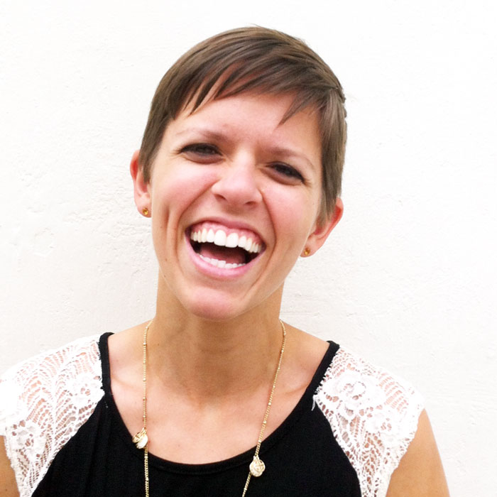

<section class="narrow">

	<article class="grid">
		<div class="box">
			<h2>What I'm About</h2>
            
			<p class="clearfix">For starters, my hair grew out so I don't look like this anymore. I'll get a new photo up one of these days.</p>
            <p>A few of my varied interests:</p>
            <ul class="list-unordered">
                <li>Traveling</li>
                <li>Women in tech</li>
                <li>Cooking</li>
                <li>Sour beers</li>
                <li>Education for underprivileged kids (I have a  <a href="http://www.bbbs.org/">Little</a>)</li>
                <li>Great coffee</li>
                <li>Great dogs</li>
                <li>Cats that act like dogs</li>
            </ul>
            <br>
            <p>When I'm not working, you will most likely find me involved in one of the above.</p>
            <p><a href="mailto:info@metricslice.com">Drop me a line</a> if you'd like to chat!</p>
		</div>	
	</article>

</section>

